Kalite
Uluslararası standartlara uygun malzeme ve cihaz seçimi. Her ürün, izlenebilir belgelerle sahaya çıkar.
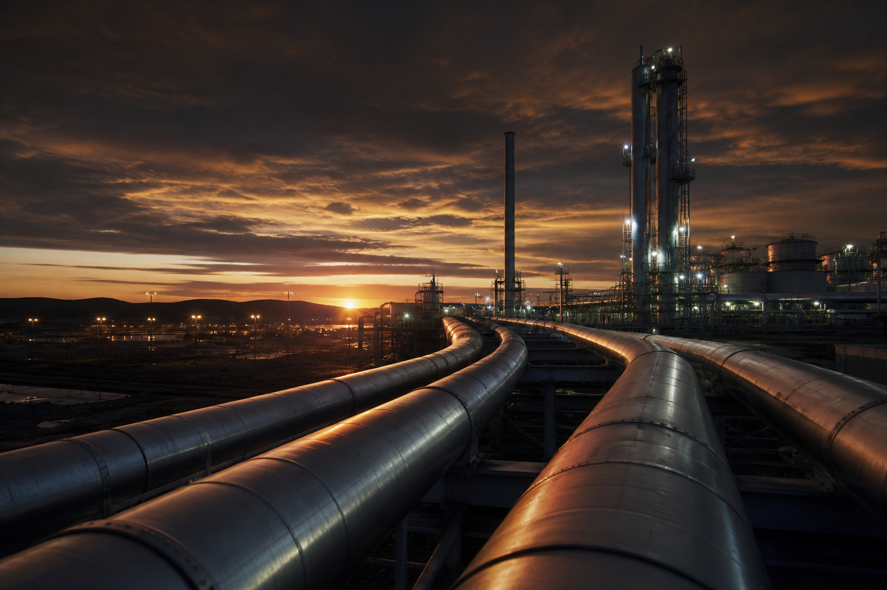
AŞKIN
Kurumsal
Her adımımızı kaliteden yana atarak, beklentilere en üst seviyede cevap vermek ve müşteri memnuniyeti bilincini tüm çalışanlara benimsetip “kalite, kaliteyi doğurur” politikası ile sizlere hizmet verebilmek için buradayız. Boru hatlarına yönelik malzeme tedariki, vana-flanş sistemleri, hidrostatik test cihazları ve tahribatsız muayene ekipmanları konusunda faaliyetlerini sürdüren ADA MÜHENDİSLİK, sizlerden almış olduğu destek ile geleceğine yatırım yapmaya devam ediyor.
Daha fazla bilgiUluslararası standartlara uygun malzeme ve cihaz seçimi. Her ürün, izlenebilir belgelerle sahaya çıkar.
Basınçlı hatlarda hata payı yoktur. Tedarik, test ve raporlama süreçlerini tek çatı altında yönetiriz.
Doğru ekipman, doğru ölçüm, doğru rapor. Saha ekiplerine pratik ve kalibre edilmiş çözümler sunarız.
İş ortaklarımız
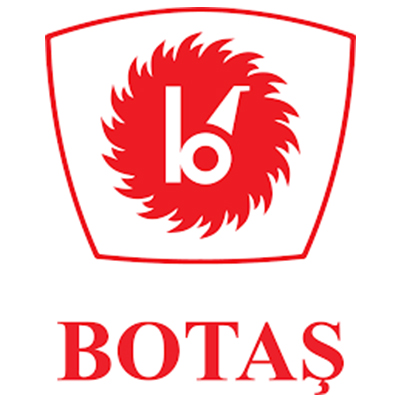
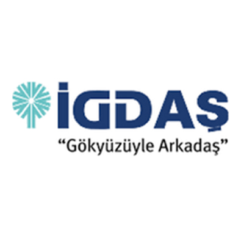
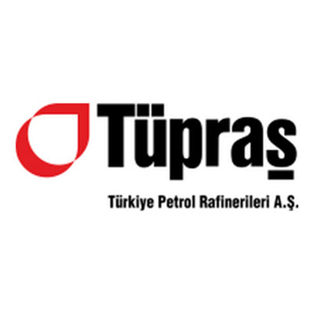
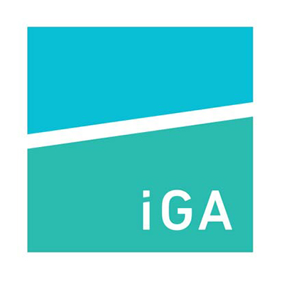
BORU HATTI MALZEME VE EKİPMANLAR
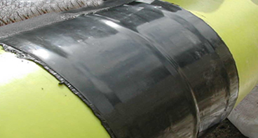
Su ve doğalgaz hatlarında ısı ile büzülerek korozyon önleyen ithal sargı bandıdır.
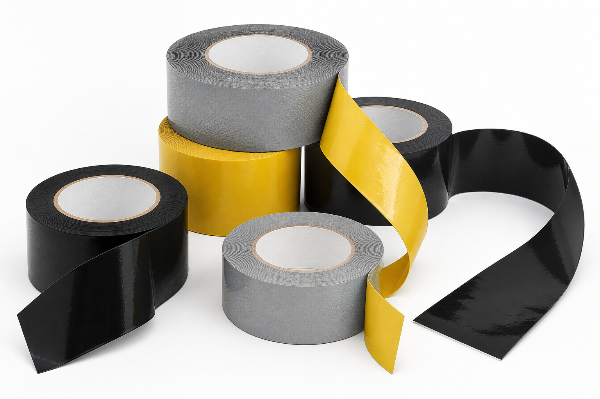
Yer altı çelik boruların kaynak yerlerinde korozyon dayanımı sağlayan Novatapes bandıdır.
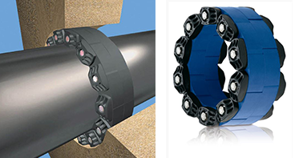
Link Seal markası ile her çapta boru-duvar geçişinde sızdırmazlık sağlayan contadır.
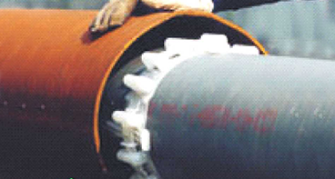
Avrupa menşeli kamalı keson izolatör, özel alet ve metal aksam gerektirmez.
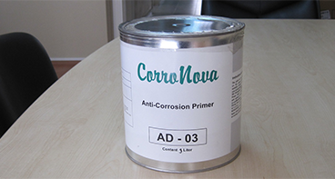
Sargı bandı uygulamalarında yüzey hazırlığı için kullanılan primer astardır.
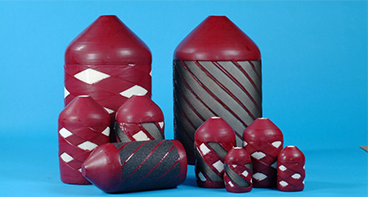
Hat temizliği, dolum ve kurutma işlemleri için çapa uygun üretilen piglerdir.